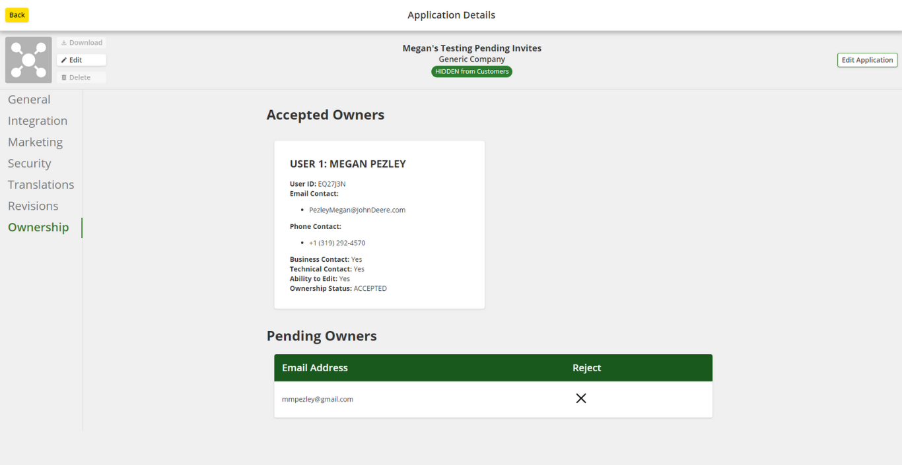
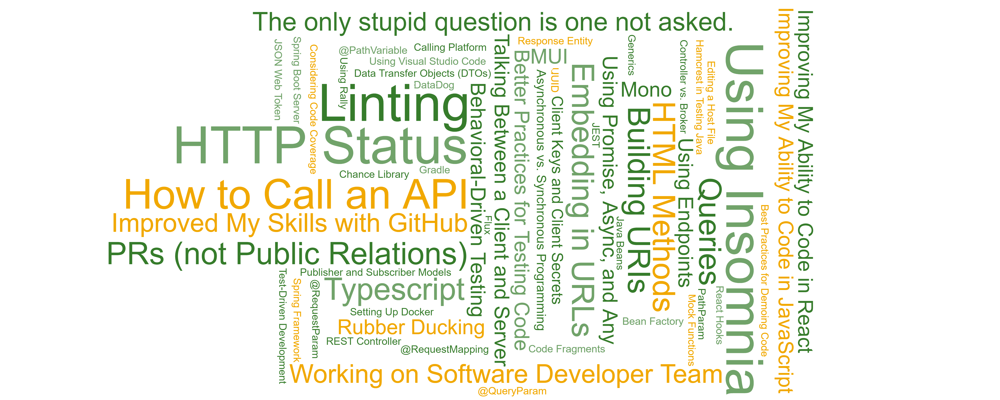

Application API Ownership Page
Skills: Audience Analysis, Stakeholder Analysis, Prototyping, Implementation, Coding, Software Development, Responsive Design, Agile
Tools: Java, JavaScript, TypeScript, React, GitHub, APIs, Insomnia, Visual Studio Code, Docker
Problem:
John Deere allows third parties to access their data to create tools for farmers and other John Deere customers. These tools are called applications, and the people who create these applications are referred to as the applications’ owners. On the internal side, John Deere did not have the ability to edit metadata related to these owners. This fact caused invitations for new application owners to get lost without anyone knowing why or who to contact to understand details about the problem. Plus, if metadata about the application owners was incorrect, John Deere did not have a way to fix it. Thus, I was challenged to create a new webpage that would allow internal John Deere employees to read and edit the application owners’ metadata.
Step 1: Understand audience and stakeholder needs.
Audience and stakeholder needs were considered to determine the project’s overall goals. Audience needs were determined based on an assumed audience, and stakeholder needs were determined based on informal interviews.

Step 2: Design mockups ideas.
Based on the audience needs and project goals, sketches of ideas for the page were created. Multiple ideas for each component were drawn and analyzed to determine what would best meet the audience and stakeholder needs and project goals based on user experience conventions. From there, low-fidelity mockups were drawn.
Step 3: Implements low-fidelity mockups.
The hardest step of the project proved to be implementing the mockups. To implement the design, I worked in JavaScript, TypeScript, and React on the frontend and Java on the backend. Data was accessed from API databases. Through this process, I discovered what it means to work as a software developer and in Agile. After each step, the webpage was presented to stakeholders and audience members for continuous feedback.
Step 4: Develop high-fidelity mockups and user flow.
This project was an ongoing project to be finished after my internship. As a result, high-fidelity prototypes were created to help the developer who took over the project understand the design and how to finish implementing the user interface. The mockups displayed the user flow for what happens when users click buttons on the page and how users complete specific actions. Also, the mockups showed how to continue ensuring the webpage has a responsive design.
Results:
I implemented the ability to see who accepted ownership invitations, who pending owners are, and accepted and pending owners’ metadata. Plus, webpage users can reject a pending owner. This design was implemented to be responsive for different sized screens. Therefore, the goal of being able to know metadata about owners was accomplished and the task of being able to edit the metadata was started. Future steps include implementing the parts of the user interface that allow for editing pending owners and editing and removing accepted owners, fully completing the second goal.

On a personal note, this project drastically forced me out of my comfort zone, causing me to learn a ton throughout the process. Here is a small sampling of what I learned:
